Anthropic just dropped Claude Design 2.0. They did a complete revamp to the platform. So I decided to put it to the test and it does feel like a much more capable platform. And there are four distinct new features that they added that I'm gonna go over in this video. Now, if you don't know what Claude Design is, let me break it down very simply so you can understand the rest of this video.
Interface & Outils : Navigateur web affichant la plateforme Claude Design d'Anthropic.
Contenu textuel & Code : Interface utilisateur de Claude Design 2.0 avec options de modèles (Prototype, Slides, Document, Wireframe, Animation) et projets récents.
Action / Démonstration : Présentation et navigation dans la nouvelle interface de Claude Design 2.0.
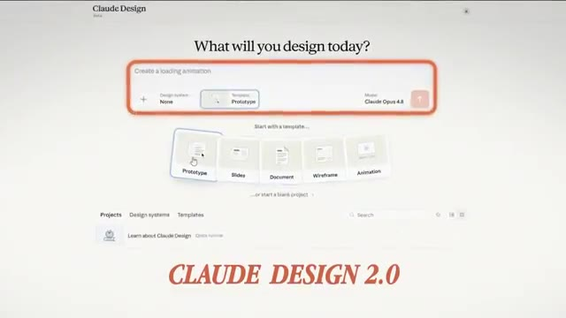
🔍 AgrandirClaude Design is a product that Anthropic released about two months ago. We could use it to generate things like web app prototypes, slideshows, mobile app prototypes. And it's basically Anthropic's version of Figma that we could use for tons of different use cases. I even used it to generate this entire animated video. I did this in one simple prompt and it took my design style from Claude Code and was able to import that directly into Claude Design and built this for me again in just one simple prompt.
Interface & Outils : Interface web Claude / Claude Design / Navigateur web
Contenu textuel & Code : Prompts de génération de prototypes, interface de personnalisation de design, pages de présentation de projets web et mobiles.
Action / Démonstration : Démonstration de la création et de la personnalisation de prototypes visuels (applications et présentations) à l'aide de l'outil d'Anthropic.
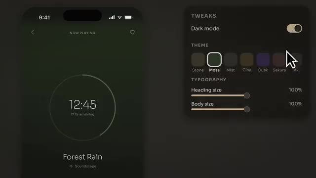
🔍 Agrandir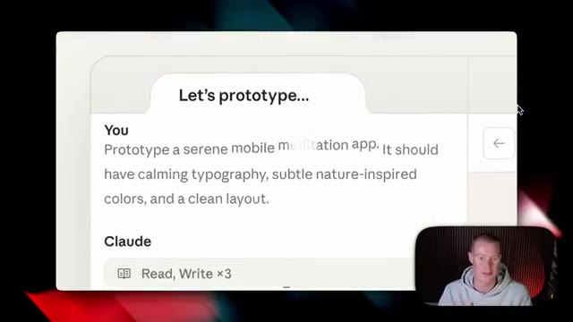
🔍 Agrandir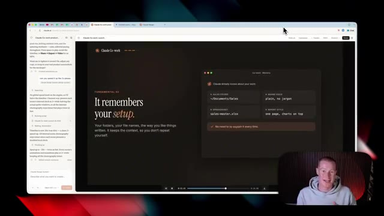
🔍 AgrandirNow, the first thing that is different, this one is apparent right when we open it up is we have a completely new design of the platform. I think this looks so much better and it's much easier to use. So right off the bat, we get this text box. We have the ability to select a design system or create one from scratch, which I'm gonna show you later in this video, how to import this from Cloud Code.
Interface & Outils : Navigateur web affichant l'application Claude Design
Contenu textuel & Code : Interface utilisateur avec barre de texte pour créer un design, options de template (Prototype, Slides, Document, Wireframe, Animation) et liste des projets récents.
Action / Démonstration : Navigation et présentation de la nouvelle interface de la plateforme Claude Design par le présentateur.
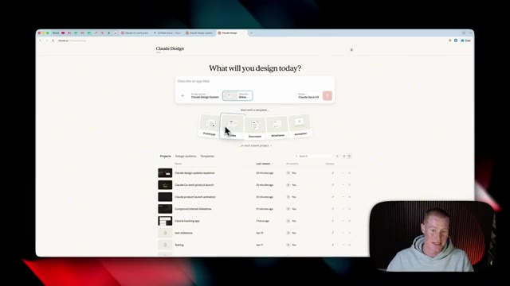
🔍 Agrandir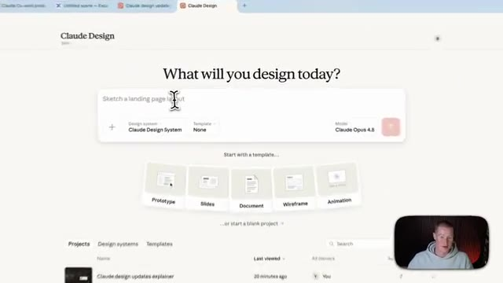
🔍 AgrandirThen we have the option to select from a template so we could create a prototype, slide, document, wireframe, or animation. So all we have to do is just click on this. Then it knows that you wanna create a prototype and then we just write in the prototype we wanna create. Our next update, this is one that people are probably gonna be pretty excited for and I personally am as well. And that is usage.
Interface & Outils : Interface web de Claude Design (Claude.ai) et pop-up de gestion d'utilisation.
Contenu textuel & Code : Menus de sélection de modèles (Prototype, Slides, Document, Wireframe, Animation), paramètres de design system et statistiques d'utilisation des crédits et des modèles (Sonnet).
Action / Démonstration : Sélection d'un modèle de prototype/wireframe dans l'interface de conception de Claude Design puis affichage des limites d'utilisation de l'API/compte.
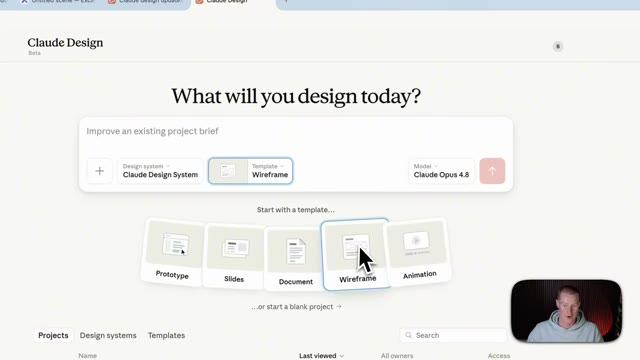
🔍 Agrandir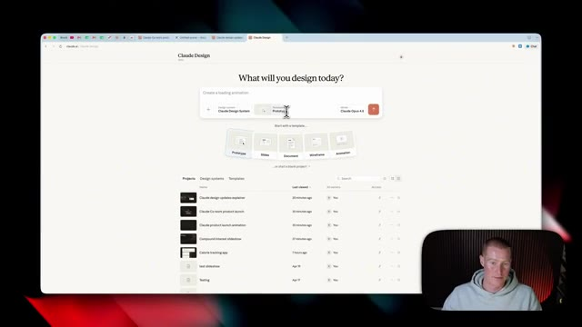
🔍 Agrandir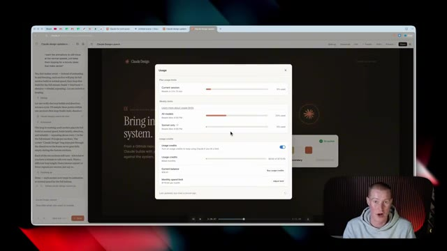
🔍 AgrandirUsage is now calculated differently than before. Now, Claude design is taking from your overall Claude plan. So for me, I'm on the Claude max plan. So it now has usage limits across my Claude code, Claude cowork and Claude design. Whereas before we had one specific to Claude design. So we'd have one limit for Claude design and then for the rest of our Claude accounts.
Interface & Outils : Navigateur web affichant l'interface de Claude Design et une modale de gestion des quotas d'utilisation.
Contenu textuel & Code : Barres de progression indiquant le pourcentage d'utilisation des différents modèles (All models, Sonnet only), les crédits d'utilisation (Usage credits), le solde actuel et la limite de dépenses mensuelles.
Action / Démonstration : Présentation et explication des limites d'utilisation combinées et du suivi des quotas sur la plateforme Claude.
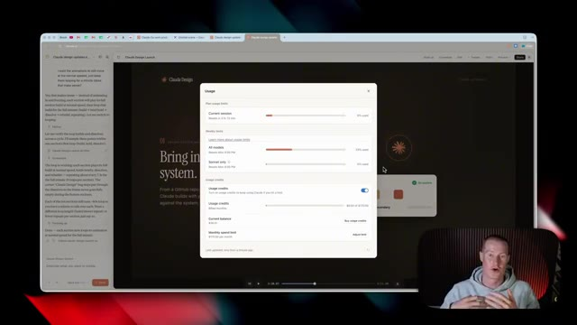
🔍 AgrandirEt c'était plutôt ennuyeux parce qu'il y avait des limites de conception de Claude assez basses. Je connais beaucoup de gens qui essayaient de tester cela et de faire de vraies choses avec. Nous atteignions ces limites très rapidement. Donc maintenant, si nous avons un forfait Claude Pro ou un forfait Claude Max, cela va alors automatiquement puiser dans ces limites d'utilisation au lieu d'une limite individuelle séparée. Très bien, alors la prochaine nouvelle fonctionnalité, celle-ci est plutôt cool.
Interface & Outils : Navigateur web affichant l'interface de l'application Claude et un panneau de gestion des limites d'utilisation et crédits.
Contenu textuel & Code : Barres de progression indiquant l'utilisation de la session en cours, les limites hebdomadaires pour tous les modèles et pour Sonnet uniquement, ainsi que les options de crédits d'utilisation et la limite de dépenses mensuelles.
Action / Démonstration : Présentation et explication visuelle des limites d'utilisation et des forfaits de l'outil Claude par le présentateur.
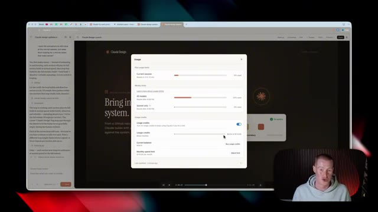
🔍 AgrandirEt celui-ci va nous faire économiser beaucoup d'argent en jetons, espérons-le. Et c'est que nous pouvons maintenant modifier directement à l'intérieur de Claude Design. Donc ce que je veux dire par là, c'est que si je clique sur modifier en haut à droite, vous pouvez voir que je suis en train de concevoir cette interface utilisateur pour cette application que je veux créer. Et je vais en fait prendre ceci et le transformer en une véritable application fonctionnelle à l'intérieur de Claude Code plus tard dans cette vidéo.
Interface & Outils : Navigateur web, interface de Claude / application web de suivi calorique.
Contenu textuel & Code : Tableau de bord 'Nourish' avec graphiques de macros, barres de progression, et outils d'édition textuelle et visuelle.
Action / Démonstration : Le présentateur clique sur le bouton 'Edit' pour modifier directement le design à l'écran.
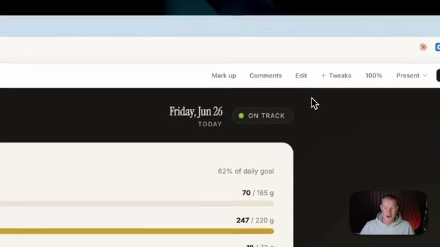
🔍 Agrandir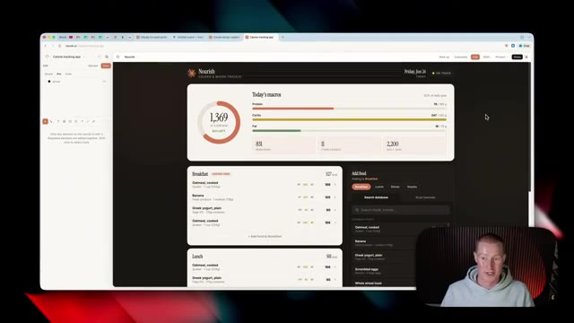
🔍 AgrandirEt sur le côté gauche, vous pouvez voir que je dois juste sélectionner ce que je veux modifier. Disons donc que je veux modifier le texte. Je cliquerais dessus. Je pourrais effectivement faire glisser du texte où je veux. Disons donc que je veux ajouter du texte ici même. Je pourrais aller de l'avant et le faire. Je pourrais taper ici même. Disons donc simplement Claude Cowork ou quelque chose comme ça. Et nous pourrions aller de l'avant et placer cela directement sur notre zone de travail qui est Claude Design.
Interface & Outils : Navigateur web affichant l'interface de développement/édition de Claude.ai (claude.ai) pour une application de suivi des calories.
Contenu textuel & Code : Maquette d'application de suivi des calories nommée "Nourish", affichant des graphiques circulaires et des barres de progression pour les macronutriments (protéines, glucides, lipides), ainsi qu'un panneau d'outils d'édition textuelle.
Action / Démonstration : Sélection d'un élément textuel sur le canevas de l'application web pour en modifier le contenu ou l'emplacement.
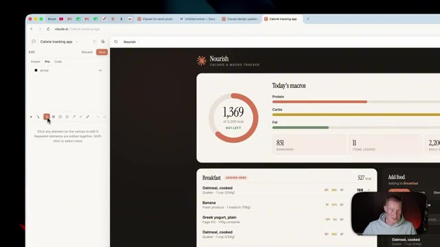
🔍 Agrandir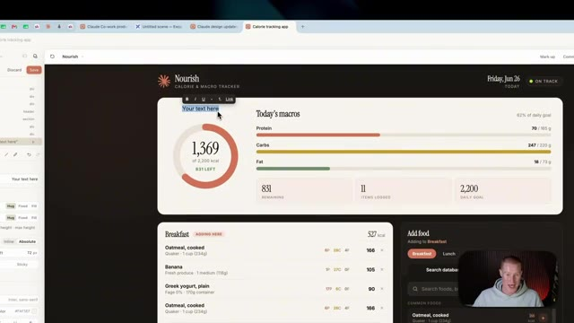
🔍 AgrandirOu si je veux modifier, vous savez, le texte que j'utilise ici, je pour-rais le faire. Changeons simplement ceci pour dire Brock's Daily Macros. Et c'est aussi simple que cela pour effectuer des modifications, au lieu de devoir venir dans le chat juste ici et expliquer ce que nous voulons modifier, car cela va consommer beaucoup de nos jetons. Alors maintenant, pensez à ceci comme à un mélange de Claude Design où nous faisons en quelque sorte de la programmation intuitive sur un design spécifique, mais aussi quelque chose comme Canva où nous pouvons réellement effectuer des modifications directement sur notre canevas. Maintenant, nous pouvons modifier bien plus que du texte également. Donc, si je clique sur modifier et que je viens sélectionner certains éléments
Interface & Outils : Navigateur web avec interface d'édition visuelle de type constructeur d'application / no-code (Bolt.new ou équivalent)
Contenu textuel & Code : Tableau de bord affichant le texte "Brock's Daily Macros", des graphiques de calories (1369 kcal), des barres de progression pour les protéines, glucides et lipides, ainsi qu'une liste de repas (Breakfast, Lunch) et un panneau latéral de configuration de style CSS/layout.
Action / Démonstration : Modification directe du texte du titre de l'application via l'interface visuelle au lieu d'utiliser le chat textuel.
ici, je peux aller de l'avant et changer à quoi cela ressemble. Cliquons sur cette petite div. Je pourrais ensuite changer l'arrière-plan. Disons donc que je veux changer la couleur de ceci pour qu'elle soit rouge, par exemple. C'est aussi simple que d'avoir la possibilité d'aller modifier chacun de ces éléments individuellement au lieu d'avoir besoin d'aller sur le chat et d'essayer de coder au feeling pour, vous savez, faire en sorte que ça ait exactement l'air de ce que je veux. Très rapidement, j'ai pris les devants et j'ai préparé cette ressource gratuite pour vous les gars que vous pouvez récupérer.
Interface & Outils : Navigateur web affichant une application web de type dashboard (Calorie tracking app) avec des outils d'édition visuelle.
Contenu textuel & Code : Tableau de bord 'Nourish' affichant les macros quotidiennes (protéines, glucides, lipides), des graphiques circulaires et des listes de repas, avec un panneau d'options de style ouvert sur le côté gauche.
Action / Démonstration : Manipulation des options de design de l'interface pour modifier les éléments visuels de l'application.
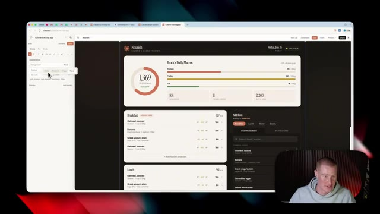
🔍 AgrandirSi vous n'avez jamais utilisé Claude Design auparavant ou si vous voulez d'autres cas d'utilisation que vous pouvez essayer par vous-même, ce guide pratique vous l'expliquera réellement et vous donnera même des invites que vous pourrez copier-coller et mettre dans Claude Design. Et si vous voulez l'obtenir, c'est complètement gratuit. Il y a un lien dans la description pour l'obtenir. En gros, venez simplement ici, mettez 0 $, cliquez sur « Je veux ceci », et vous entrerez votre email et il vous l'enverra.
Interface & Outils : Présentation ou face-caméra explicatif du trader sans interface logicielle partagée.
Contenu textuel & Code : Explications orales des stratégies et mise en contexte méthodologique du marché.
Action / Démonstration : Explications face caméra et analyse conceptuelle des marchés.
Maintenant, revenons à la vidéo. Très bien, alors notre prochaine fonctionnalité, et celle-ci va être vraiment utile si vous êtes un utilisateur actuel de Cloud Code. Donc, cela concerne notre système de design. Alors pour vous montrer ce que je veux dire, si je viens ici et que je clique là où il est écrit « système de design », vous pouvez voir que j'ai quelques systèmes de design préconfigurés que j'ai élaborés au préalable, ou nous pouvons en créer un nouveau de toutes pièces.
Interface & Outils : Navigateur web affichant l'interface de Claude Design (Claude.ai).
Contenu textuel & Code : Options de design, choix du modèle (Claude Opus 4.8), sélection de templates (Prototype, Slides, Document, Wireframe, Animation) et liste des projets.
Action / Démonstration : Le présentateur présente l'interface et survole les options du système de design de Claude.
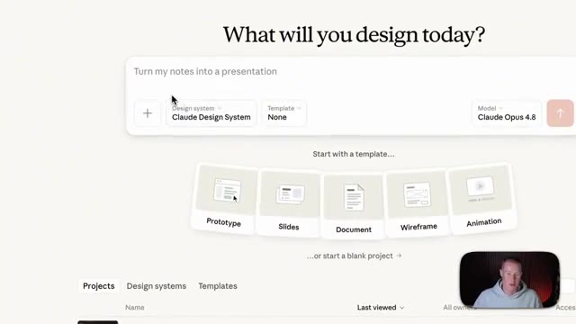
🔍 AgrandirSo we have two options. First, we could create it here by connecting either Figma, GitHub, or uploading all the different design assets manually. But now we have a new option where we could use Cloud Code, which actually gives us the best fidelity when it comes to the designs if we're using React components. And it will do this for us automatically so we don't manually need to import all the designs we've built.
Interface & Outils : Interface web de Claude / outil de design system.
Contenu textuel & Code : Options de création de design system : "Create here" (Connect to Figma or GitHub, or upload slides and assets) et "Create using Claude Code" avec le badge "BEST FIDELITY" pour les composants React.
Action / Démonstration : Présentation des deux méthodes disponibles pour configurer et importer un design system dans Claude.
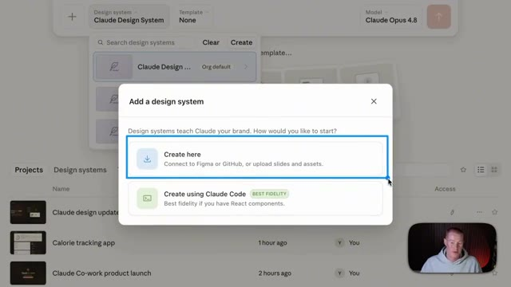
🔍 AgrandirDonc pour vous montrer ce que je veux dire, si je clique là-dessus, cela nous montre alors cet ensemble d'instructions pour exécuter cela directement à l'intérieur de Cloud Code. Donc si notre système de design vit déjà à l'intérieur de Cloud Code, nous pourrions ouvrir notre paquet de système de design dans Cloud et simplement exécuter cette commande ici appelée design sync. Maintenant, pour expliquer cela encore plus, nous avons donc la possibilité simplement de cliquer sur le bouton du système de design.
Interface & Outils : Présentation ou face-caméra explicatif du trader sans interface logicielle partagée.
Contenu textuel & Code : Explications orales des stratégies et mise en contexte méthodologique du marché.
Action / Démonstration : Explications face caméra et analyse conceptuelle des marchés.
It then reads our kit using Cloud Code with a design sync. It reads and compiles all the different parts and components that we use inside of our designs. So if we have things like a preexisting client project or specific design styles you've crafted for your business, For me personally, I have a specific style I use for my school community as well as for my personal brand content, which you've probably seen on my YouTube channel.
Interface & Outils : Présentation ou face-caméra explicatif du trader sans interface logicielle partagée.
Contenu textuel & Code : Explications orales des stratégies et mise en contexte méthodologique du marché.
Action / Démonstration : Explications face caméra et analyse conceptuelle des marchés.
Et maintenant, avec cette commande, il va automatiquement le scraper, puis il va le téléverser directement dans Cloud Design pour que nous n'ayons pas à le faire manuellement. Maintenant, afin de vous montrer ce que je veux dire, à l'intérieur de Cloud Co-Work, j'ai des tonnes d'artefacts et de tableaux de bord différents que j'ai construits dans ce style exact ici, que vous avez probablement vu sur cette chaîne YouTube. Et comme vous pouvez le voir, c'est dans un style Claude très spécifique ici que j'aime personnellement beaucoup dans n'importe quel tableau de bord que je crée.
Interface & Outils : Navigateur web affichant des diaporamas et l'application Cloud Co-Work / Cowork OS.
Contenu textuel & Code : Schémas explicatifs de design, tableaux de bord de gestion de contenu, indicateurs de performance et listes de tâches quotidiennes. [DESC_IMAGE_1] Présentation des fonctionnalités de synchronisation de design et des flux de travail automatisés. [DESC_IMAGE_2] Navigation dans le tableau de bord personnel Cowork OS pour illustrer l'organisation des artefacts. [DESC_IMAGE_3] Consultation de la vue du plan de la journée au sein de l'interface de travail.
Action / Démonstration : Explications face caméra et analyse conceptuelle des marchés.
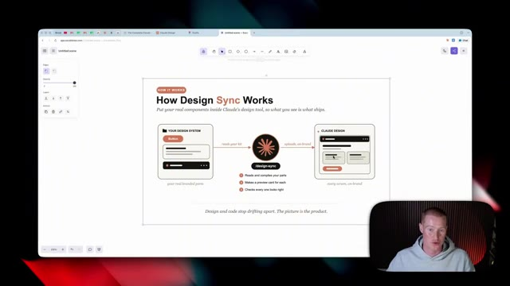
🔍 Agrandir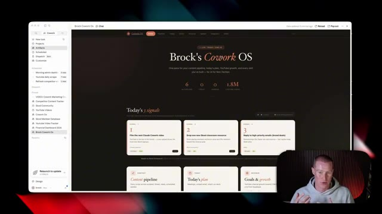
🔍 Agrandir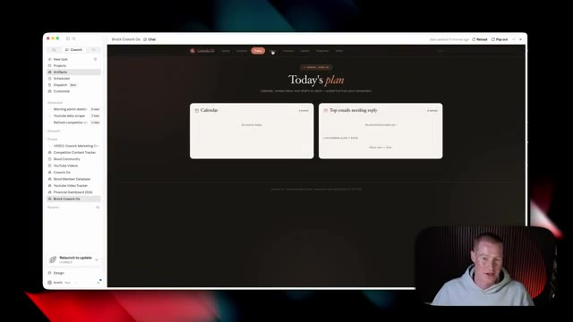
🔍 AgrandirJ'utilise ceci comme exemple. Je reviens à notre application de suivi des calories pour laquelle je conçois le design. Elle est exactement dans le même style. Et c'est parce que je l'ai importée directement depuis Claude Code. Il y aura donc toujours cette cohérence visuelle, comme vous pouvez le voir ici. Et pour donner un autre exemple, voici une petite vidéo animée rapide que j'ai fait concevoir et créer par Claude.
Interface & Outils : Navigateur web affichant l'interface de Claude et des applications web créées.
Contenu textuel & Code : Tableaux de bord de suivi nutritionnel (calories, protéines, glucides, lipides) et graphiques statistiques comparatifs.
Action / Démonstration : Le présentateur commente l'application de suivi des calories et montre la cohérence visuelle générée par l'IA.
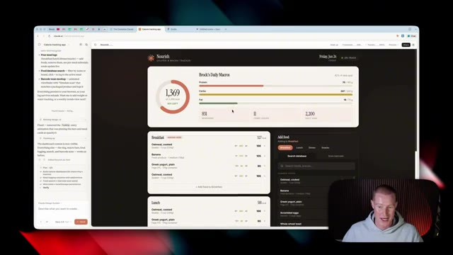
🔍 Agrandir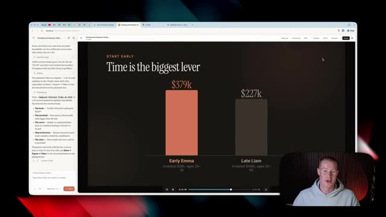
🔍 AgrandirEt encore une fois, c'est dans le tout même style que nous avons vu à l'intérieur de Claude. Donc avant de vous montrer certaines des autres fonctionnalités du nouveau design de Claude, je veux d'abord montrer comment nous pourrions prendre un design d'application que nous avons juste ici et l'envoyer automatiquement à Claude Code et transformer cela en une application fonctionnelle que je pourrais réellement utiliser. Parce qu'en ce moment tout cela a l'air super, mais il n'y a pas de base de données construite sur le backend de ceci.
Interface & Outils : Présentation ou face-caméra explicatif du trader sans interface logicielle partagée.
Contenu textuel & Code : Explications orales des stratégies et mise en contexte méthodologique du marché.
Action / Démonstration : Explications face caméra et analyse conceptuelle des marchés.
Donc je ne peux pas vraiment utiliser ça en fait. C'est juste une sorte de design sophistiqué que j'ai construit dans Claude Design. Donc pour faire ça, nous pourrions venir ici, cliquer sur partager et nous voulons cliquer sur envoyer vers. Et à partir de là, nous pourrions envoyer ceci vers différentes applications. Donc CloudCode, Canva, Miro. Et si je clique sur ajouter plus, je pourrais même l'envoyer à des outils de codage instinctif comme Lovable ou d'autres outils de design comme Gamma.
Interface & Outils : Présentation ou face-caméra explicatif du trader sans interface logicielle partagée.
Contenu textuel & Code : Explications orales des stratégies et mise en contexte méthodologique du marché.
Action / Démonstration : Explications face caméra et analyse conceptuelle des marchés.
Now, I'm going to focus on sending this to CloudCode. So I'm just going to click send. It gives me this fancy little prompt that I could use in order to set this up. So I'm going to come back over to my Cloud Desktop app, click on CloudCode. And I'm simply just going to paste in the prompts that it gave me. All right. So just like that, we now have our app imported directly into Cloud Code. And I could begin making changes here since we have our design finalized. We obviously did that inside of Cloud Design. Now, what I need to do is build out an actual database. So what I'm going to be using is something called Supabase. If you don't know what Supabase is, do not worry if you're non-technical.
Interface & Outils : Application Claude Code, interface web de tableau de bord, caméra de présentation.
Contenu textuel & Code : Code source, journaux d'exécution, aperçu d'application de suivi calorique "Nourish", graphiques de macronutriments et barres de progression.
Action / Démonstration : Présentation de l'interface développée et du flux de génération par l'intelligence artificielle dans Claude Code.
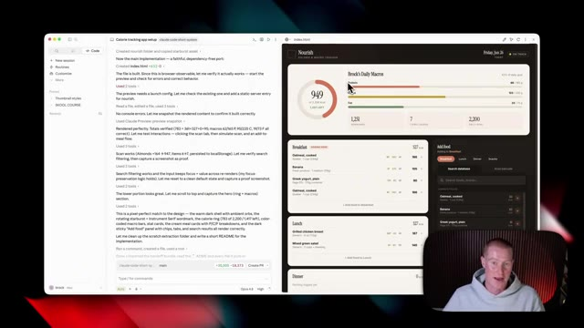
🔍 AgrandirYou don't really need to know how it works because I'm going to use this via a connector inside of Cloud. And it's going to do all this stuff for me. Supabase is basically a platform that allows us to store all of the backend information necessary to make our app functional. So to give you an example, here is a database I have that tracks all of my different content.
Interface & Outils : Présentation ou face-caméra explicatif du trader sans interface logicielle partagée.
Contenu textuel & Code : Explications orales des stratégies et mise en contexte méthodologique du marché.
Action / Démonstration : Explications face caméra et analyse conceptuelle des marchés.
Ça me montre la durée. Ça montre le nombre de j'aime. Ça montre le titre des vidéos. Ça montre l'URL, et cetera. Parce que si je n'ai pas de backend pour mon application, alors le frontend est fondamentalement inutile car il n'est capable de stocker aucune des informations. Eh bien, heureusement, Supabase rend cela incroyablement simple. Laissez-moi donc vous montrer comment configurer ceci. Maintenant, tout d'abord, assurez-vous simplement de créer un compte. Il y aura un lien dans la description ainsi que dans le commentaire épinglé pour créer un compte Supabase. Et ensuite, nous allons revenir à Claude et nous allons venir sur le côté gauche où il est indiqué personnaliser. Et nous devons simplement ajouter le connecteur Supabase. Donc, cliquez sur les connecteurs. J'ai une liste d'applications que j'ai connectées. Nous allons cliquer
Interface & Outils : Navigateur web affichant une interface de base de données backend (Supabase ou similaire) avec le présentateur en incrustation.
Contenu textuel & Code : Tableaux de données structurés contenant des identifiants vidéo, des titres, des URLs, des catégories, des dates de publication et des durées.
Action / Démonstration : Le présentateur montre l'interface backend qui stocke les informations des vidéos pour l'application.
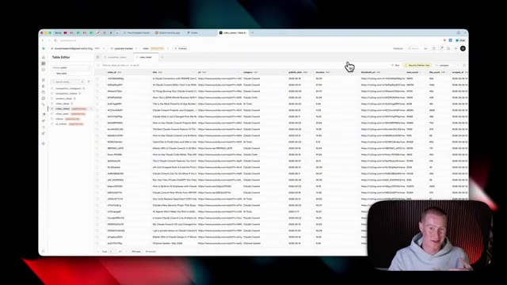
🔍 Agrandirsur parcourir et cherchez simplement Supabase. Ensuite, cliquez sur le bouton plus. Cela va nous amener à notre compte Supabase. Et tout ce que nous avons à faire, c'est d'accorder l'accès à l'organisation de l'espace de travail spécifique auquel nous voulons donner accès. Je vais donc simplement sélectionner mon email ici, cliquer sur autoriser Claude, et cela devrait nous renvoyer vers Claude. Et voilà. Vous pouvez voir que Supabase est maintenant connectée sur le côté droit. Et ensuite, ce que je vais faire, c'est que je vais sélectionner Supabase.
Interface & Outils : Navigateur web, interface Supabase, interface de configuration de Claude.
Contenu textuel & Code : Écran de demande d'accès OAuth pour lier Supabase à Claude avec sélection de l'organisation et permissions (Read/Write).
Action / Démonstration : Autorisation de l'accès à Supabase et affichage des connecteurs disponibles.
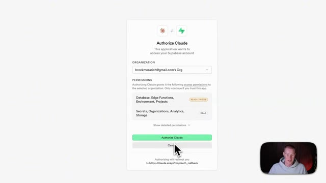
🔍 AgrandirJe vais simplement cliquer sur toujours approuver. Comme ça, ça ne demandera pas si c'est autorisé à aller chercher des données dans ces différentes tables de base de données, ainsi qu'à créer des tables de base de données. Et maintenant, nous devrions être prêts. Ensuite, je vais simplement revenir à Claude et lui dire simplement, hé, je veux que tu transformes ceci en une application fonctionnelle, utilise le connecteur Supabase afin de créer une base de données pour moi pour suivre toutes ces informations afin que l'utilisateur puisse ajouter des aliments spécifiques et suivre toutes ces données et faire en sorte que cela se reflète fidèlement sur cette application. D'accord, donc je vais lui donner cette instruction et maintenant ce qu'il va faire, c'est aller créer la base de données backend pour moi, et ensuite je vous montrerai le résultat final.
Interface & Outils : Présentation ou face-caméra explicatif du trader sans interface logicielle partagée.
Contenu textuel & Code : Explications orales des stratégies et mise en contexte méthodologique du marché.
Action / Démonstration : Explications face caméra et analyse conceptuelle des marchés.
Très bien, et juste comme ça, il a construit toute cette base de données d'application. Donc pour vous montrer exactement ce que je veux dire, nous avons mon application affichée juste ici. Nous avons ma base de données Supabase configurée juste ici avec toutes les informations à l'intérieur de notre application. Donc pour tester cela, ce que je vais faire, c'est que je vais saisir l'un de mes repas et nous devrions voir cela s'ajouter dans cette base de données au fur et à mesure que nous le faisons.
Interface & Outils : Navigateur web affichant l'application Nourish et la plateforme Supabase.
Contenu textuel & Code : Tableaux de bord de calories, macros quotidiennes (protéines, glucides, lipides) et tables de données relationnelles Supabase.
Action / Démonstration : Démonstration de l'interface utilisateur de l'application et visualisation de la structure de la base de données backend.
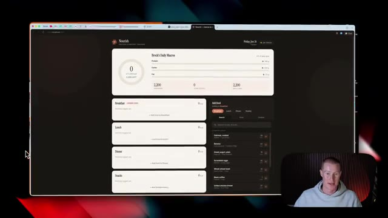
🔍 AgrandirDonc, si je me dirige par ici, je vais tout simplement ajouter quelques produits différents ici. Disons donc que j'ai mangé des flocons d'avoine, j'ai pris une banane, du yaourt grec et des œufs brouillés pour le petit-déjeuner ou quelque chose comme ça. Maintenant, comme vous pouvez le voir juste ici là où il est écrit petit-déjeuner, nous pouvons voir chacun de ces éléments alimentaires ajoutés à cette liste. Et si je reviens à mon journal alimentaire et que je rafraîchis ceci, vous pouvez maintenant voir que cela a rempli toutes ces métadonnées dans cette base de données.
Interface & Outils : Application web de suivi nutritionnel et de gestion des repas.
Contenu textuel & Code : Liste d'aliments avec leur apport calorique en kilocalories (kcal) et répartition des macronutriments (protéines, glucides, lipides).
Action / Démonstration : Sélection et ajout d'aliments pour composer le repas du petit-déjeuner et calcul automatique des calories totales.
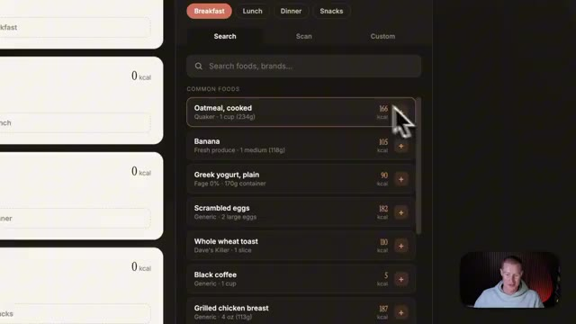
🔍 Agrandir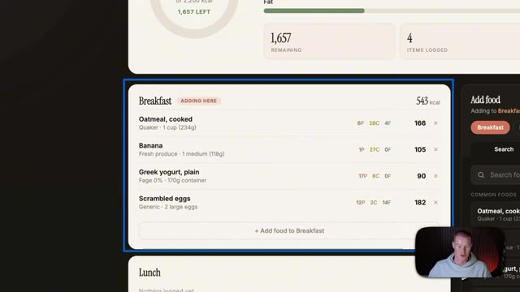
🔍 AgrandirSo hopefully this gives you a sense of how you could go from Cloud Design into Cloud Code and use something like Supabase to turn this into an actual app that works in real time. Now, the next update that I want to talk about is we could access Claude Design directly inside of the desktop app, whether inside of Claude Cowork or Claude Chat Mode. We'll see it at the bottom left of our screen.
Interface & Outils : Applications web et de bureau (Cloud Design, Cowork)
Contenu textuel & Code : Tableaux de bord de suivi nutritionnel, listes de tâches, interface de chat IA et menus de navigation
Action / Démonstration : Navigation et présentation des fonctionnalités de conception d'applications et d'accès direct aux outils de design.
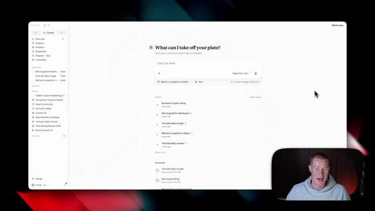
🔍 Agrandir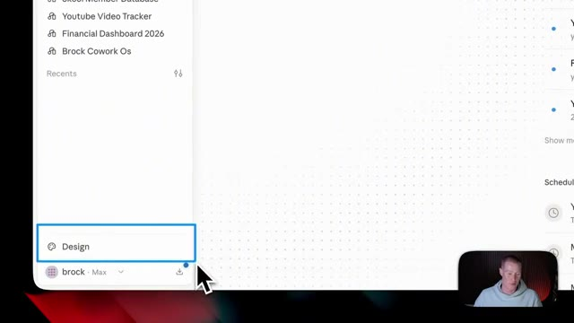
🔍 AgrandirEt si je clique dessus, ce que ça va faire, c'est ouvrir cet écran séparé où nous pourrions commencer à utiliser Claude Design au lieu de l'utiliser seulement sur l'application Web. Parce que jusqu'à présent, nous devions aller sur Claude.ai dans le navigateur Web et l'utiliser directement ici. Donc maintenant, nous n'avons pas besoin de quitter l'application de bureau pour utiliser Claude Design, ce que, je le sais pour ma part, je n'utiliserais même pas Claude Design la plupart du temps de nos jours, je suis dans l'application de bureau et je ne penserais même pas à basculer sur le navigateur Web.
Interface & Outils : Présentation ou face-caméra explicatif du trader sans interface logicielle partagée.
Contenu textuel & Code : Explications orales des stratégies et mise en contexte méthodologique du marché.
Action / Démonstration : Explications face caméra et analyse conceptuelle des marchés.
Maintenant, la prochaine fonctionnalité dont je veux parler dans la nouvelle mise à jour de Cloud Design, ce sont les connecteurs. Donc je clique sur ma petite icône de compte et je vais sur les connecteurs. Vous pouvez voir que je peux accéder à n'importe lequel des différents connecteurs cloud que j'ai configurés, et j'en ai déjà une tonne d'ajoutés. Si je clique sur parcourir le répertoire, cela va nous amener ici où nous pouvons ajouter n'importe quelle application que nous voulons utiliser. Maintenant, disons qu'il y a une application que vous voulez utiliser avec Claude Design, mais que vous ne la voyez pas dans ce répertoire ici même dans Claude. Eh bien, je vais vous montrer un truc qui vous permettra de vous connecter à plus de 9 000 applications différentes en utilisant quelque chose appelé le MCP Zapier. Si vous ne savez pas
Interface & Outils : Application Cloud Design / interface web de gestion des connecteurs.
Contenu textuel & Code : Liste des connecteurs cloud disponibles dans le répertoire (Figma, Notion, Asana, Google Drive, Canva, Microsoft 365, Gmail, Slack, HubSpot, etc.).
Action / Démonstration : Navigation dans le répertoire des connecteurs pour montrer les différentes intégrations disponibles.
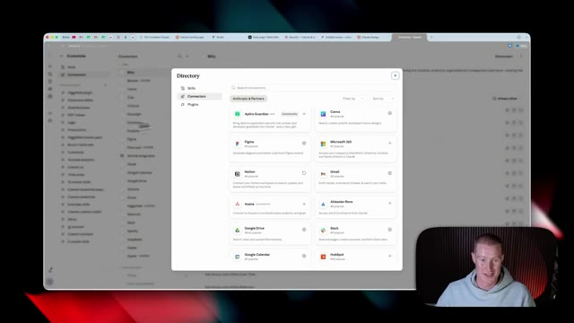
🔍 Agrandirwhat Zapier is, it's an automation platform that connects to 9,000 plus different apps. And an MCP server is like a universal connector that connects your AI to any of the apps that you want to use. So that way you can go and perform actions across those apps. So I'm going to click on get started. there will be a link in the description to sign up if you want to test this out. Next, we're going to click on add new MCP server. Then we're just going to come to Claude, copy in the prompt here. And then I'm going to come to the Claude desktop app and just simply paste in this prompt. And now it's going to pull up this little box here where I'm just going to click connect. Then it's going to bring you back to Zapier to copy another prompt. Then I'm going
Interface & Outils : Navigateur web affichant le site de Zapier.
Contenu textuel & Code : Texte explicatif sur Zapier MCP ("Your AI can talk. Zapier MCP makes it act.") et boutons d'action.
Action / Démonstration : Le présentateur s'apprête à cliquer sur le bouton "Get started" pour démarrer l'intégration.
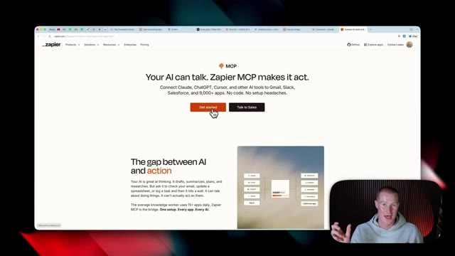
🔍 Agrandirde cliquer sur continuer, de cliquer sur autoriser, et ensuite de cliquer sur ouvrir Claude. Et cela devrait être configuré et prêt à fonctionner. Maintenant de retour dans le chat, si je clique sur ce bouton utiliser, cela va ensuite me guider sur la façon de configurer cela exactement comme je veux que ça fonctionne. Donc maintenant nous avons notre compte Zapier connecté. Afin d'ajouter différentes applications, nous allons venir sur notre serveur MCP que nous avons créé, cliquer sur ajouter, et nous pourrions sélectionner n'importe quelle application que nous voulons ajouter à notre serveur.
Interface & Outils : Interface web de Claude avec un encadré de configuration Zapier (bouton "Use").
Contenu textuel & Code : Un message textuel demandant de se connecter à Zapier MCP, suivi d'un composant d'interface indiquant "Zapier Connected" avec un bouton d'action "Use".
Action / Démonstration : Le curseur de la souris se positionne près du bouton d'action pour configurer ou utiliser le connecteur Zapier MCP.
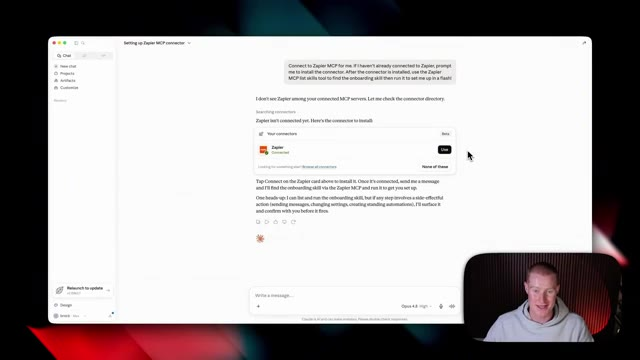
🔍 AgrandirC'est aussi simple que de cliquer sur ce bouton, de sélectionner tous les outils ici, pour qu'il soit capable d'effectuer ces actions à travers ces applications, et ensuite de cliquer sur ajouter un outil. Et juste comme ça, nous pouvons maintenant demander à Claude Design d'effectuer des actions à travers ces différentes applications avec Zapier. Très bien, alors testons cela et construisons réellement une animation à l'intérieur de Claude Design. Donc ce que je vais faire, c'est simplement sélectionner un modèle ici.
Interface & Outils : Navigateur web affichant l'interface de gestion de serveur MCP (Zapier MCP).
Contenu textuel & Code : Liste des applications connectées avec le nombre d'outils associés (Synthflow AI, Sheet, Slack) et options de configuration d'agent IA.
Action / Démonstration : Connexion de l'application Slack et sélection des outils pour permettre à l'agent IA d'effectuer des actions à travers les applications.
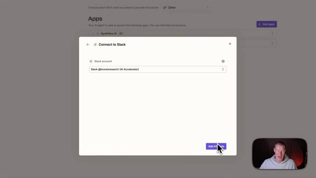
🔍 Agrandir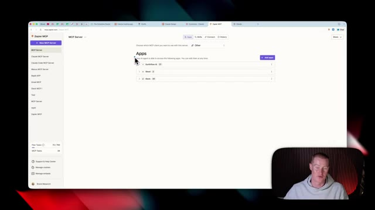
🔍 AgrandirJe vais sélectionner animation. Je vais sélectionner mon design system, qui s'appelle Claw Design System, que j'ai configuré. Et ensuite, je vais simplement venir et dire, je veux que tu génères une vidéo de style lancement de produit avec cette compétence d'animation sur le fonctionnement des intérêts composés. Donc je pourrais envoyer ça et maintenant, ça va générer toute cette vidéo animée pour moi après avoir répondu à quelques-unes de ces différentes questions.
Interface & Outils : Navigateur web affichant l'interface de l'application Claude Design et son panneau de configuration.
Contenu textuel & Code : Menu déroulant de sélection des design systems ("Claude Design System", "AI for Non-Techies Design System") et zone de prompt textuel.
Action / Démonstration : Sélection d'un design system et d'une compétence d'animation, puis soumission d'une requête textuelle pour générer une vidéo.
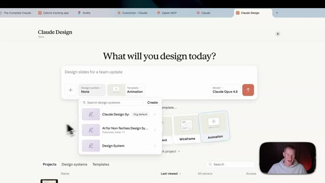
🔍 Agrandir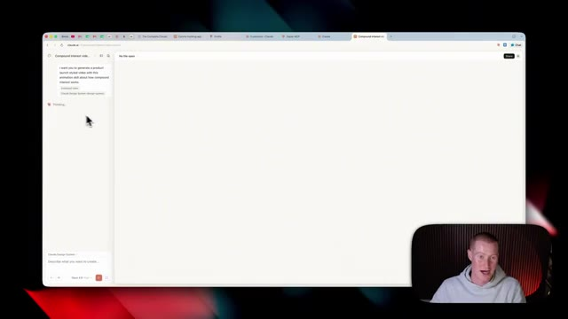
🔍 AgrandirMaintenant, quelques minutes plus tard, nous avons cette vidéo animée qu'il a créée dans ce style exact que je vous ai montré plus tôt dans la vidéo. Je veux dire, c'est plutôt cool. Le fait que Claude Design ait été capable de générer tout cela est assez fou. Très bien, les gars, voilà. Ce sont toutes les nouvelles mises à jour de Claude Design. Si vous voulez plus de contenu comme celui-ci, abonnez-vous à cette chaîne. Je couvre l'IA pour les non-techniciens. Ceci étant dit, merci d'être restés jusqu'à la fin et je vous vois dans la prochaine vidéo. Salut.
Interface & Outils : Navigateur web (Claude AI / Interface de génération de vidéo).
Contenu textuel & Code : Interface utilisateur affichant une animation graphique sur les intérêts composés ($1,000, $1,080, $1,166, $1,260) et le panneau de chat latéral.
Action / Démonstration : Présentation du résultat final d'une vidéo animée générée automatiquement par l'IA.
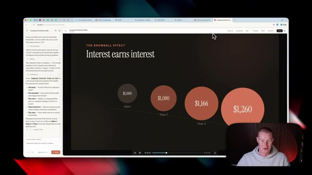
🔍 Agrandir